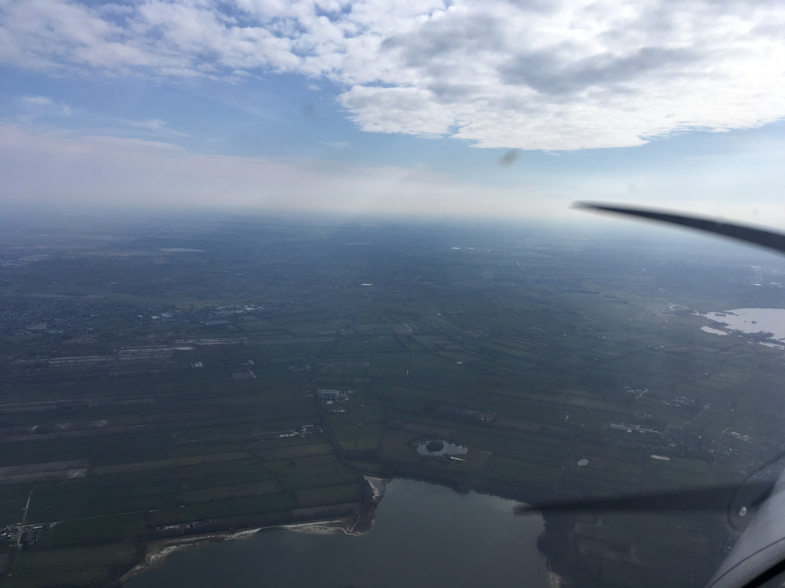

De Waterhoenstraat van bovenaf
Foto van Sneek
Wachten op de instructeur
 Zonsondergang boven het wad
Zonsondergang boven het wadUitzicht over Fryslân
Onderweg naar Ameland
Foto van de cockpit
Bart als piloot
PM Kanaal door Friesland
Boven Groningen
Vliegveld van boven
Short final op 07